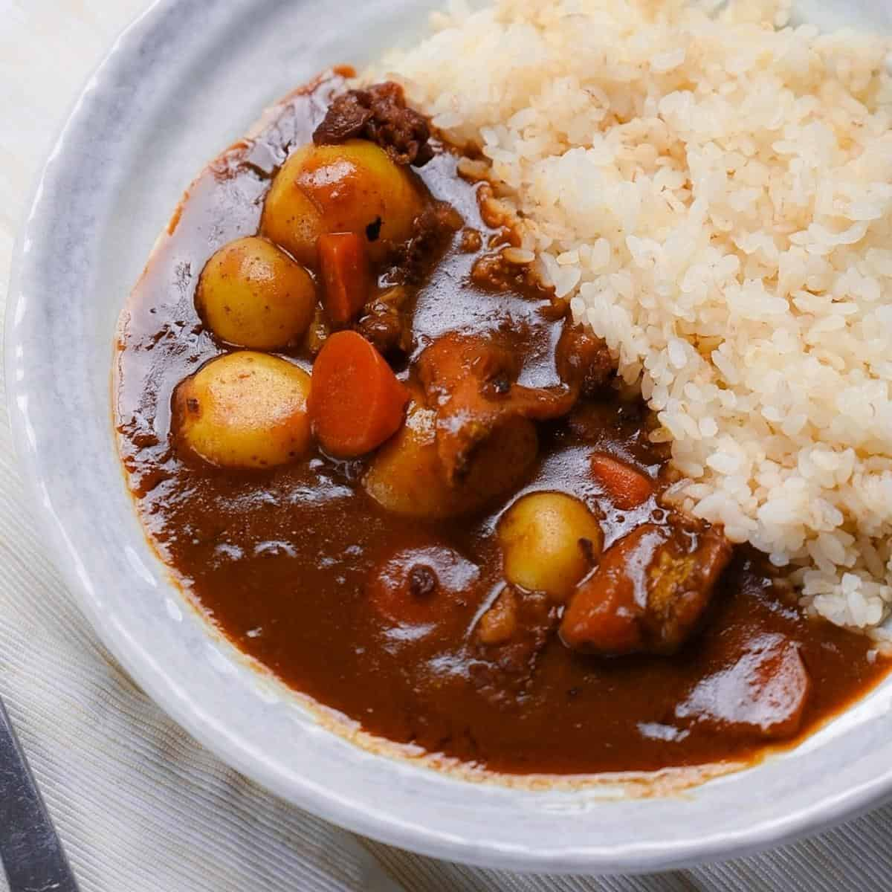
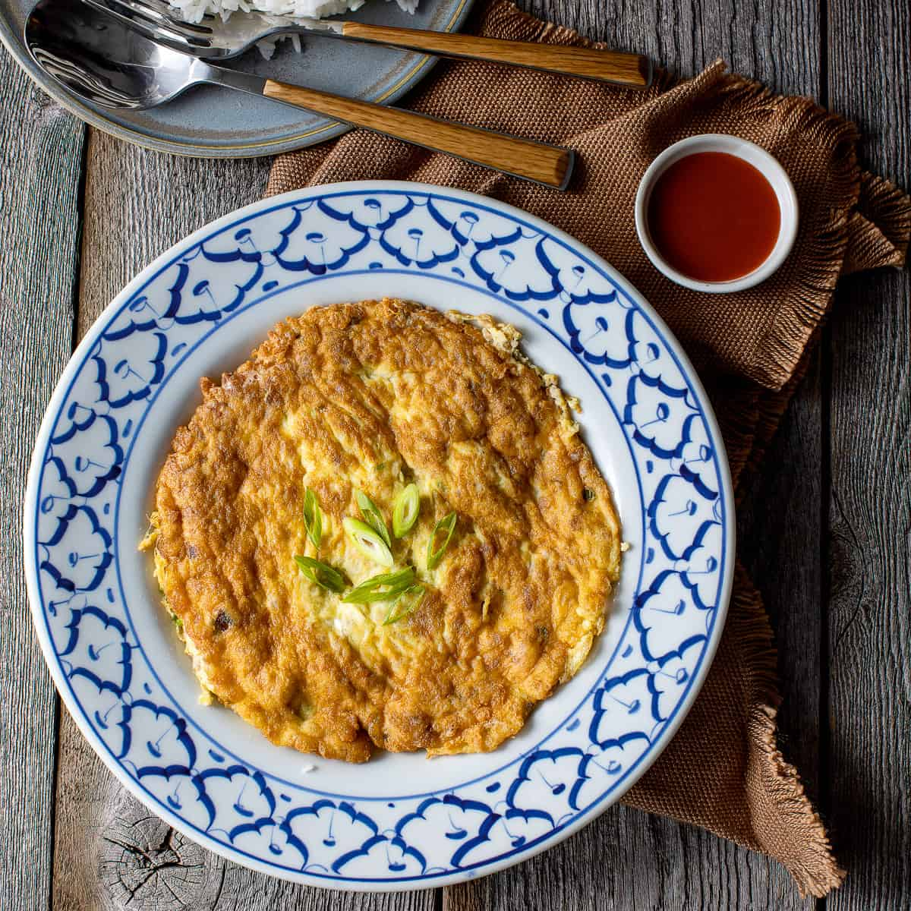

Japanese Curry

A dish containing meat and various vegetables mixed together in a creamy and savory sauce.
- Rice
- Curry roux
- Meat of choice
- Potato
- Carrot
- Onion
Boat Noodle

A bowl of noodles with various meat and vegetables.
- Rice noodle
- Boat noodle paste
- Beef or pork
- Vegetables like bean sprouts and coriander
Omelette

Beaten fried egg that's been seasoned to one's preference
- Egg
- Sugar
- Soy sauce
- Lime
- Pepper